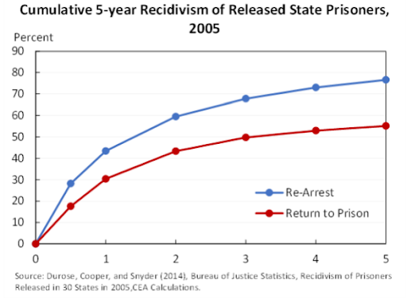
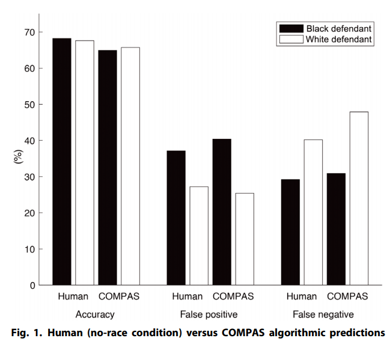

The United States has the largest prison population and highest per-capita incarceration rate in the world. Both metrics have grown significantly in the past century, heavily outpacing population growth. Furthermore, “The US spends $270 billion annually funding the criminal justice system and maintaining prisons.” To incarcerated individuals, there is an approximate economic loss of $15 billion annually, wholly from tangible cost. With such high costs associated with imprisonment, it would be reasonable to expect the criminal justice system to carefully ensure a fair system when sentencing people to prison.
However, the fairness of the criminal justice system in the United States is currently being questioned. People convicted of the same crime can serve dramatically different prison sentences. In some instances, perpetrators convicted of heinous crimes, such as murder or rape, have faced little to no prison time. In other circumstances, convicted individuals have been sentenced to life in prison for petty theft, such as stealing nine dollars, a pair of hedge clippers, or even just a slice of pizza.
When sentencing someone to prison, it is important to consider any extenuating circumstances. Even when the outcome of a crime is similar, such as an individual dying, the sentence should reflect whether it was the result of an accident, negligence, or intent to do harm to another. Another key consideration is the likelihood of the defendant committing another crime, commonly known as recidivism.
One major criticism of the United States’ prison system is that the extenuating circumstances are not evaluated fairly by judges and juries. It is difficult to avoid the influence of personal biases and opinions in determining a suspect's guilt, intent, and likelihood of recidivating. What if there was a way to limit the influence of human bias in sentencing while also accurately predicting whether an individual would recidivate? This was the promise of machine learning.
Part 1B: Recidivism in the United States
There is a high likelihood for convicted prisoners to recidivate. A U.S. Bureau of Justice report studied 401,288 released prisoners across 30 states in 2005 and found that 83% of released prisoners were arrested at least once after their release, with most arrests occurring within 5 years of release.

Since recidivism is such an important issue in the United States, it is imperative that the judge and jury have a good way of assessing the risk of someone reoffending without including personal bias. Some criminologists believe that using automated machine learning algorithms would be able to eliminate such bias. They argue that, since machine learning algorithms quantify the probability of someone recidivating based on statistical techniques and do not include human interference, they should be unbiased.
One machine learning algorithm used to predict the likelihood of recidivism for a convicted person is the ‘Correctional Offender Management Profiling for Alternative Sanctions’ or COMPAS algorithm for short, which was created in 1998 by a private firm, Northpointe. This algorithm has been criticized for it's lack of accuracy, but still used in several states. Its legality has also started to be put into question. In 2015, Eric Loomis was sentenced to six years of imprisonment and five years of extended supervision for driving a car that had been used in a shooting in 2013. The COMPAS algorithm’s output for him was taken into consideration when he was sentenced. Eric was classified as a high-risk individual by the algorithm. Eric Loomis appealed his decision, claiming his due process right to be sentenced based on accurate information was violated, as guaranteed by the 14th amendment.
However, the Wisconsin Supreme Court and Court of Appeals denied his appeal. Moreover, the United States Supreme Court refused to even hear the case. Although Eric was not able to view the proprietary algorithm that Northpointe developed, the Wisconsin court cited that he was still able to challenge the risk score itself and that the studies have shown that the algorithm “was reasonably accurate”. However, if a COMPAS risk assement is used, it must contain a written notice listing its limitations. Whenever the COMPAS algorithm is used, the notice states that the algorithm has been found to disproportionately classify minority offenders as having a higher risk of recidivism. The notice also states that the defendants are compared to a national sample, and that no cross-validation study has been completed with the Wisconsin population.
More cases have discussed the recidivism prediction issue, but they have also come to the conclusion that risk assessment algorithms, like COMPAS, should be allowed to be used for prison sentencing and do not violate an individual's right to be sentenced on accurate information. However, in the next section we show that the use of a different type of machine learning algorithm, called “random forests’, produces different results.
Part 1C: Machine Learning Reducing Bias?
Can machine learning algorithms reduce bias when predicting recidivism?
Many states, such as New York, California, Florida, have used government funds to purchase the COMPAS algorithm to assist judges in determining the length of over one million defendants’ sentences based on their likelihood of recidivating. The algorithm takes in public criminal profile data and a set of 137 interview questions answered by the defendant, which are used to gather information on past criminal involvement, relationships, lifestyle, personality, familial background, and education level, to produce a 1-10 score representing the risk level of the individual recidivating. Since the algorithm was created by a private firm, certain details are proprietary.
Northpointe claimed the COMPAS algorithm was unbiased against race, since it does not include race when making its predictions. ProPublica, a nonprofit newsroom that aims to produce investigative journalism in the public interest, decided to test this claim.
In an independent evaluation of COMPAS, ProPublica looked at 7,000 individuals arrested in Broward County, Florida from 2013 to 2014. They found that only 20% of individuals predicted by COMPAS to commit violent crimes actually did. Another troubling conclusion is that the false positive rate -- that is, the rate at which people who were predicted to recidivate but did not -- was significantly higher for Black defendants (44.9%) than white defendants (23.5%). An additional study found that COMPAS’ highest level of accuracy was 65%, and that human participants were more capable of predicting recidivism than COMPAS.

In that same study that claimend the highest level of accuracy was 65%, it also showed that humans were on par with COMPAS in prediciting recidivism
Although the algorithm does not include race when making its predictions, several COMPAS survey questions are likely correlated with race. The Columbia law professor, Bernard Harcourt, makes the connection that risk of recidivating is predominatly tied to criminal history which is a proxy for race.
Unfortunately, when considering what data to collect and include in a model, bias can unknowingly be introduced into any algorithm, and when the model influences the length of an individual’s time in prison, the effects may be devastating.
Part 1D: Get Curious
1. Do you think using risk-assement tools in the courtroom is moral?
2. What if it helps reduce the prison population?
3. What implications does this have?
4. Should states across the US continue to use the COMPAS algorithm? Why or why not? Does your answer vary by state?
5. Can we guarantee justice in the courtroom for all individuals when inherently biased algorithms are used in the decision process?
6. What questions should be asked before spending government money on such algorithms?